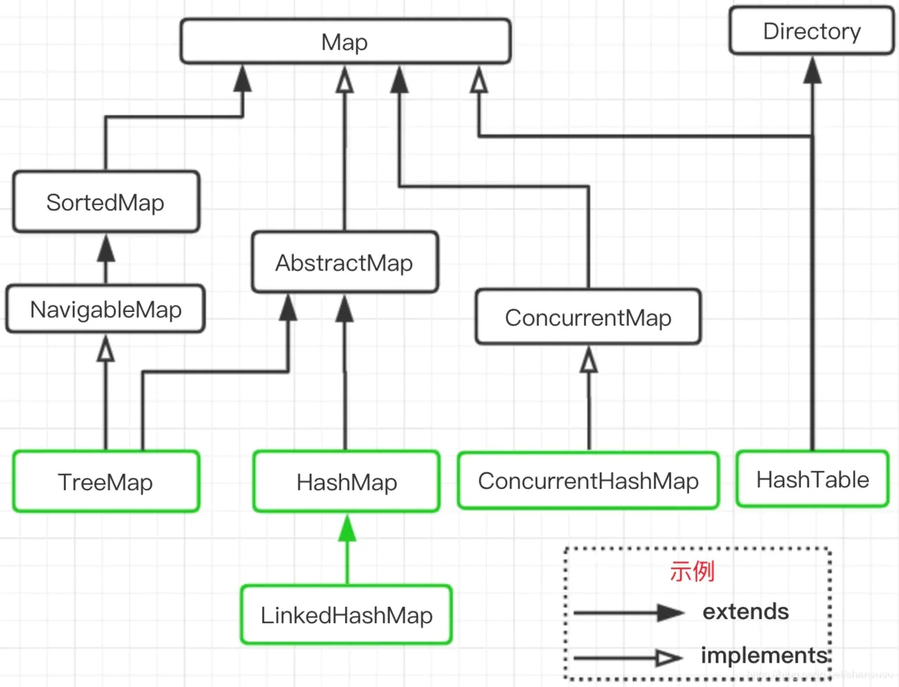

Java基础
String
StringBuffer：线程安全
StringBuilder：线程不安全
集合
List
- ArrayList
- LinkedList
- CopyOnWriteList
- Collections.synchronizedList 内部包装类，用sync修饰方法
Set
- HashSet 基于HashMap
- TreeSet 基于TreeMap
Map

HashMap
特点
- 允许null值、null键
- 线程不安全
旧版底层实现
- 哈希表 + 链表
新版底层实现
- 哈希表 + 链表
- 链表长度大于8时，转化为红黑树（避免严重哈希冲突时，性能退化为单链表）
长度为啥是2的次方
1、取余(%)操作中如果除数是2的幂次则等价于与其除数减一的与(&)操作
2、HashMap的key的hash采用上述方法，性能更高
3、所以分布在2的次方空间，长度取2的次方分布才均匀
ConcurrentHashMap
特点
线程安全的HashMap
版本1.7底层实现
进一步采用分段的方式，每段配置一个锁。Segment继承自ReentranLock
版本1.8底层实现
抛弃了分段方式，使用自旋锁 + Sychronized 方式来保证并发安全
put时，若key对应的value为null，通过cas保证写入成功，否则加Sychronized锁
对于读操作，由于数组被volatile关键字修饰，因此不用担心数组的可见性问题。同时每个元素是一个Node实例（Java 7中每个元素是一个HashEntry），它的Key值和hash值都由final修饰，不可变更，无须关心它们被修改后的可见性问题。而其Value及对下一个元素的引用由volatile修饰，可见性也有保障。
static class Node<K,V> implements Map.Entry<K,V> {
final int hash;
final K key;
volatile V val;
volatile Node<K,V> next;
}
对于Key对应的数组元素的可见性，由Unsafe的getObjectVolatile方法保证。
static final <K,V> Node<K,V> tabAt(Node<K,V>[] tab, int i) {
return (Node<K,V>)U.getObjectVolatile(tab, ((long)i << ASHIFT) + ABASE);
}
TreeMap
红黑树，Node.Key 即为 key，Node.value 即为 value
因此：
- 不允许重复Key
- 可以排序，需要实验Compartable
BlockingQueue
阻塞队列，用于生产者消费者
- ArrayBlockingQueue (ReentrantLock.Condition来实现）
- LinkedBlockingQueue
- PriorityBlockingQueue 优先级队列
- DelayQueue 延时队列
- SynchronousQueue （无缓存，生产者直接对接消费者）
异常

try-with-resource
自动关闭资源，需要实现AutoCloseAble接口
try (Scanner scanner = new Scanner(new FileInputStream("c:/abc"),"UTF-8")){
// code
} catch (IOException e){
// handle exception
}
发布于 2020/08/22
浏览
次